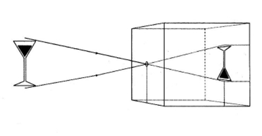
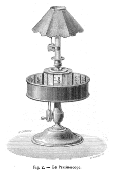
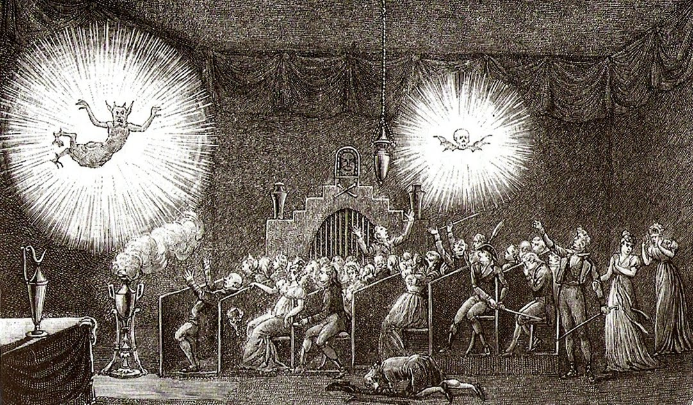
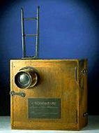

Cinema, Arte e Educação
Autora
Alice Fátima Martins Doutora em Sociologia, Mestre em Educação, Licenciada em Educação Artística, habilitação em Artes Plástica pela Universidade de Brasília (UnB). Desenvolveu estágio de pós-doutorado nas áreas dos Estudos Culturais e do Cinema na Universidade Federal do Rio de Janeiro (UFRJ) e na Universidade de Aveiro. Professora no curso de Licenciatura em Artes Visuais, e no Programa de Pós-Graduação em Arte e Cultura Visual na Universidade Federal de Goiás (UFG). Bolsista de Produtividade pelo Conselho Nacional de Desenvolvimento Científico e Tecnológico (CNPq).
Marcelo Henrique da Costa Doutor em Arte e Cultura Visual, Mestre em Cultura Visual, ambos pelo Programa de Pós-Graduação em Arte e Cultura Visual, da Universidade Federal de Goiás (UFG). Publicitário. Professor efetivo no bacharelado em Cinema e Audiovisual da Universidade Estadual de Goiás (UEG). Coordenador de Radioteledifusão da UEG TV e da Rádio UEG Educativa. Coordenador do Cria Lab, Laboratório de Pesquisas Criativas e Inovação em Audiovisual da UEG. Líder do Grupo de Pesquisa/CNPq – Centro de Realização e Investigação Audiovisual.
Renato Cirino Doutorando no Programa de Pós-Graduação em Arte e Cultura Visual da Universidade Federal de Goiás (UFG) onde também obteve o título de Mestre. Bacharel em Jornalismo, pela UFG, e Licenciado em Artes Visuais pela Rede de Educação Claretiano. Autor da instalação artístico-interativa Brinca_Comigo, com registro de software no Instituto Nacional de Propriedade Industrial (INPI), pelo potencial para Educação. Técnico Audiovisual da Faculdade de Artes Visuais na UFG.
Saiba maisApresentação
Gostaríamos de desejar boas-vindas a este módulo, e fazer o convite para iniciarmos uma viagem em várias dimensões, atravessando alguns portais propiciados pela linguagem cinematográfica, pelo audiovisual! Esta viagem incluirá a própria história do cinema e seus recursos, as histórias que podem ser contadas pelo e no cinema, e as aprendizagens que podemos construir a partir das relações com as narrativas fílmicas, seja quando produzimos essas histórias, seja quando as assimilamos, vendo filmes realizados por outras pessoas.
É importante que nos apresentemos. Participaram, na elaboração deste material, três pessoas ligadas ao campo das artes, do cinema, do audiovisual e da educação, cada qual de uma forma distinta, mas experimentando, em comum, o encantamento pelo cinema, pelas narrativas fílmicas, pelo audiovisual. Alice tem desenvolvido projetos de pesquisa junto a pessoas que, mesmo com baixa escolarização, sem formação na área do cinema, e contando com precárias condições de realização, contam histórias por meio de filmes, e compartilham suas produções com a comunidade da qual fazem parte. Atualmente, tem buscado conhecer os trabalhos realizados por mulheres que tenham esse perfil. Marcelo trabalha com cinema e audiovisual, e tem trabalhado com a possibilidade de produção de narrativas a partir do uso de aparatos móveis. É por esse caminho que ele busca as aproximações com os projetos educativos, e com a formação de professores. Renato tem desenvolvido projetos de arte e educação, envolvendo a possibilidade de realização de filmes por parte de estudantes e professores. E também tem pensado nos processos de produção de narrativas de modo colaborativo, solidário.
É a partir dessas referências, que queremos compartilhar os caminhos por nós percorridos, para construirmos juntos, aprendizagens ao longo das leituras aqui propostas, bem como dos exercícios e também dos filmes que serão disponibilizados para todos nós.
Contem com nosso entusiasmo e paixão pela temática e suas possibilidades.
Boas aventuras!
Unidade 1: O que temos aprendido com o cinema?
Proposta de atividade deflagradora
Comecemos esta unidade com um breve exercício, compartilhando com o grupo algumas memórias das nossas relações com o cinema e com filmes:
1. Você frequenta salas de cinema?
a. Se frequenta, você se lembra da primeira vez que viu um filme numa sala?
b. Se não vai a salas de cinema, onde você costuma ver filmes? Você se lembra do primeiro filme que viu? Poderia falar sobre ele?
2. Você tem alguma lembrança marcante em sua relação com filmes (seja em salas de cinema, ou em outros meios e lugares)? Poderia contar?
3. Você poderia perguntar a uma pessoa conhecida sua sobre suas lembranças em relação ao cinema? Poderia relatar?
Quando ouvimos a palavra cinema, o que nos ocorre ao pensamento? A palavra pode ser dotada de diferentes sentidos a depender das experiências proporcionadas. Muitas vezes, as pessoas pensam naquela sala escura para onde vão quando querem sonhar, ou se aventurar em outros universos, escapando, assim, das rotinas que tomam o dia a dia. Mas há também aqueles que logo se lembram dos “artistas realizadores”, muitas vezes chamados de “mestres do cinema”, e seus produtos cinematográficos considerados obras de arte. Nesse caso, evidentemente, não podemos deixar de fora a indústria do cinema, que reúne tanto os lugares de produção e realização dos trabalhos cinematográficos, quanto as redes de distribuição para que os públicos possam consumi-los.
Ou seja, a palavra “cinema” pode se referir uma edificação construída para a projeção de filmes, ou a linguagem que envolve imagens em movimento e sonorizadas, e ainda a complexa malha de empresas, instituições e profissionais que atuam nos processos de produzir e veicular filmes. É sobre essas questões que vamos conversar por aqui. E vamos estabelecer as relações dessas possibilidades todas com os campos da arte e da educação.
Para início de conversa, precisamos reconhecer que não importa onde, quem, quando, como: as pessoas de todos os tempos e lugares contam histórias! Contam histórias que se reportam a fatos vividos, ouvidos, ou sonhadas, inventadas, imaginadas, fantasiosas. Dentre os quantos modos de se contarem essas histórias, estão aqueles cujas narrativas organizam-se por meio de imagens em movimento, sonorizadas, qualquer que seja o nome dado para isso: cinema, audiovisual... Por outro lado, se as pessoas contam histórias, também ouvem as histórias contadas. Ou as veem/ouvem. E essas histórias passam a fazer parte das memórias das pessoas, integram suas visões de mundo.
As relações entre contar e ouvir histórias são sempre muito enriquecedoras nas dinâmicas da cultura. E, não raro, encontramos trabalhos no cinema e na literatura que fazem referência a isso. Quantas vezes, há trabalhos ainda que estabelecem relações indissociáveis entre a literatura e o cinema. Por exemplo, é o caso de Maria Margarita, que assumiu o papel de contadora de filmes para sua família e as gentes de sua cidade. Ela é a protagonista do livro A contadora de filmes, criado pelo escritor chileno Hernán Rivera Letelier (2012). Situada na década de 1950, a narrativa acompanha a filha caçula de uma família de mineiros. Ela foi escolhida para, aos domingos, assistir aos filmes em cartaz, e depois contar a história para o pai, mãe e irmãos. Nesse exercício, ela revela o talento para narrar, com tal capacidade de envolvimento, que conquista público entre os vizinhos, e muitos outros moradores do local.
O também chileno Alberto Fuguet escreveu o romance Os filmes da minha vida (2005). Nele, o autor narra as turbulências vividas pela personagem principal, entrelaçando esses momentos com filmes que viu e deixaram impressões em sua memória. Nem sempre se lembra de todo o filme, mas de sensações, trechos, uma imagem, um som. Nem sempre são filmes de que ele goste, embora tenham marcado sua vida de alguma forma. A leitura do livro nos instiga também a pensar como podemos estabelecer
Assim sendo, mais do que pensar as condições técnicas da produção das imagens animadas e sonorizadas, ou a linguagem cinematográfica do ponto de vista fílmico, é preciso lembrar que o cinema está repleto de histórias, de tramas que, desde a invenção do cinematógrafo, habitam os imaginários, integram as memórias das pessoas. Não são só as histórias do cinema, mas são principalmente as histórias contadas pelo cinema que tomam parte das memórias, integrando aquelas referências constituidoras das subjetividades (MARTINS, 2014). Ao integrar as subjetividades, propiciam aprendizagens complexas, que envolvem as dimensões cognitivas, e também as afetivas. A experiência sensível, no encontro entre a pessoa que assiste e a narrativa fílmica, ultrapassa a especificidade dos interesses do mercado cinematográfico. Esta afirmação requer uma advertência: não se trata de assumir uma posição ingênua, que suponha possível deslocar a experiência sensível fora das dinâmicas do mercado, seus vetores políticos e econômicos. Ao contrário. Contudo, é preciso ressaltar que, entre quem assiste e o filme, esse encontro é impregnado de repertórios, referências do mundo vivido, memórias que integram ativamente tal experiência.
Para saber mais
No texto Sobre aprender com o cinema (MARTINS, 2017b), publicado na Revista Digital do LAV, disponível no link abaixo, vocês encontram alguns relatos de várias pessoas, sobre suas memórias com o cinema, sobre as coisas que têm aprendido com o e no cinema. https://periodicos.ufsm.br/revislav/article/view/28783/pdf
Em relação ao potencial pedagógico do cinema, convidamos vocês a pensá-lo de distintas formas, buscando não pretender domesticá-lo à organização temporal das atividades escolares, sem subjugá-lo às exigências e aos conteúdos da educação formal. Esse é o nosso desafio!
Educadores e educadoras que se dispõem a inserir narrativas fílmicas no cotidiano escolar enfrentam, como ponto de partida, o desafio de lidar com a incompatibilidade entre os tempos de aula e os de duração dos filmes. A solução para esse impasse, em geral, é buscada na restrição da escolha dos filmes em termos de formato: apenas filmes de curta-metragem, por exemplo. Ou então, os títulos são escolhidos para ilustrar conteúdos ensinados nas aulas. Essa escolha é definida pela possibilidade de o filme contribuir para a compreensão de tópicos e temáticas das áreas de conhecimento envolvidas. Tanto numa quanto na outra situação, a eleição do filme está subjugada às especificidades da escola, as dimensões mais fechadas de seus currículos.
Ressalta-se a possibilidade de se organizarem espaços, dentro e fora das escolas, nos quais a comunidade, direta ou indiretamente envolvida com a vida escolar, possa ver filmes, compartilhar relatos, conversar, sem direcionamentos prévios, sem roteiros estabelecidos por antecipação para o desenvolvimento de possíveis discussões. Desse modo, a experiência se abre a aprendizagens plurais, à ampliação de repertórios, a conexões imprevisíveis.
Mais que isso: não é só por meio do conteúdo das histórias contadas pelo cinema que se promovem processos de aprendizagem, ou a (trans)formação de mentalidades. Assistir a um filme envolve dimensões sensoriais, corpóreas. Suas narrativas ensinam comportamentos, sugerem posturas, desejos. Sugerem modos de organização do pensamento e de sistematização da experiência.
Quando se fala de cinema, atualmente, é preciso notar a multiplicação das modalidades audiovisuais que dão suporte a narrativas as mais diversas, das quais o cinema é a primeira matriz. A popularização das tecnologias digitais criou condições inéditas de acesso aos aparatos e à produção de histórias próprias. Igualmente viabilizaram o compartilhamento das narrativas em meios que transbordam os circuitos das salas de cinema. Veiculam-se por meio das redes de computador, das programações televisivas, pelos games, entre quantas plataformas e possibilidades.
Assim, as fronteiras do cinema encontram-se, também, em processo de explosão... Não raro, espectadores organizam-se em coletivos que tomam para si o protagonismo na produção de narrativas próprias. Se até há pouco tempo, a produção de filmes estava restrita a alguns poucos centros difusores, pelos altos custos e dificuldade de acesso a equipamentos, a tecnologia digital da imagem e do som, aliada à popularização de aparatos e aparelhos digitais, mudou esse cenário. Comunidades e grupos os mais diversos têm assinado narrativas próprias, ou narrativas desde seus próprios pontos de vista.
Proposta de atividade: exercícios de memória e de contar histórias
Para fecharmos esta etapa, propomos que vocês pensem em algum episódio do cotidiano que tenham vivido, ou que poderiam ter vivido, e gostariam de contar. Não importa se, ao contar, vocês inventem, atribuindo novas roupagens, emoções, tempos, ênfases... modificando os fatos... Podem dar as colorações que a sua imaginação desejar. Lembrem-se que a máxima “quem conta um conto aumenta um ponto (um, dois, três pontos...)” tem pleno valor por estas searas!
Contem essa história, num breve texto. É importante que vocês, ao contá-la, construam, na sua imaginação, os seus ambientes visuais, os ritmos dos movimentos, as sonoridades, as luminosidades.
Unidade 2: Imagens animadas e sonorizadas: uma breve contextualização
Sociedade e imagens
As imagens sempre povoaram o imaginário humano desde que homens e mulheres, vivendo em comunidade, passaram a se entender como gentes pensantes. Os registros de imagens gravadas em cavernas e paredões de pedra em tantos e tão diversos territórios ajudam a imaginar possibilidades sobre a vida dessas primeiras populações humanas, e como percebiam tudo quanto os cercava, por meio das representações nas pinturas rupestres.
Segundo o Instituto do Patrimônio Histórico e Artístico Nacional (IPHAN), foram descobertos 1.435 sítios arqueológicos no Estado de Goiás. Entre eles, destacam-se os vestígios pré-coloniais do município de Serranópolis, no Sudoeste do Estado, onde estão sendo investigados 40 abrigos rochosos. As paredes dos abrigos estão cobertas por pinturas rupestres e gravações. As pesquisas revelaram que o local teve uma ocupação indígena densa e persistente, desde 9000 a.C. até a fixação de colonizadores, no século XVIII. A datação mais antiga é confirmada pelo achado, em 1996, de um esqueleto masculino, na Gruta do Diogo, batizado de “Homem da Serra do Cafezal”, popularmente conhecido como Zé Gabiroba (DOMINGUES, 2016).
Embora possam, eventualmente, parecer insipientes, tomando-se as noções atuais sobre imagens visuais, as pinturas rupestres são exemplos claros de que, desde os primeiros grupamentos humanos, se fazia presente a produção simbólica por meio da qual se contavam histórias: as suas próprias e as observadas ao seu redor.
Existem registros de pinturas rupestres que parecem simular o movimento dos animais. Acesse o QR Code abaixo e assista ao vídeo que mostra pinturas rupestres, encontradas na França, que procuram imitar o movimento de tigres e bisões. https://youtu.be/RMVDhj4ScWs
Outro bom exemplo que ilustra o desejo humano em dar movimento para as imagens é o teatro de sombras, técnica milenar muito popular e tradicional em países asiáticos, como China, Indonésia e Malásia. Acesse o QR Code abaixo e assista ao vídeo que mostra um fragmento de um espetáculo teatral que utiliza essa técnica teatral. https://youtu.be/bXwJL006HLw
Além das imagens produzidas fazendo-se uso de uma ferramenta sobre alguma superfície (desenho, pintura, etc.), mais recentemente passamos a conviver com imagens produzidas a partir de aparatos tecnológicos. Essas imagens são geradas pela mediação de algum tipo de equipamento que auxilia em sua construção, captação e/ou reprodução, as chamadas imagens técnicas. O desenvolvimento tecnológico sempre foi fundamental para que esse tipo de imagem existisse, aliás, elas só são chamadas assim graças à existência de inúmeras tecnologias que possibilitam a sua produção e reprodução.
A câmara escura, por exemplo, já era utilizada no século XVI por Leonardo Da Vinci. Ela foi de fundamental importância para o desenvolvimento da maior parte dos equipamentos tecnológicos que atualmente utilizamos para produzir imagens técnicas. Seu funcionamento se parece com o nosso olho. A luz que incide sobre um determinado objeto é refletida e captada pelo orifício que fica na frente da câmara. Esse orifício funciona como a íris do olho humano. Esse feixe de luz projeta na parede da câmara, oposta ao furo, a imagem do objeto que está diante dela. No caso do olho humano, essa imagem é projetada sobre a retina, o que nos possibilita ver o objeto. No caso de uma câmera fotográfica ou de filmar, essa imagem é projetada sobre um suporte sensível. Nos tempos dos equipamentos analógicos esse suporte era o filme ou película; atualmente, nos equipamentos digitais, existem placas sensíveis à luz que captam essas informações e as transformam em arquivos digitais. Na ilustração abaixo temos a simulação do funcionamento da câmara escura.
No século XVII artistas utilizavam a câmara escura, já equipada com lente, o que deixava a imagem projetada com maior qualidade de resolução para sua visualização. No filme “Moça com brinco de pérola” (2004), de Piter Webber, a vida do pintor francês Johannes Vermeer é transformada em uma ficção cinematográfica e retrata justamente esse período histórico. Acesse o QR Code abaixo e assista ao trecho do filme em que o pintor Vermeer apresenta a câmara escura. https://youtu.be/aRG9I_zXg74
Proposta de atividade
Vamos fazer uma câmara escura? Acesse o link abaixo e assista ao vídeo tutorial que ensina a produzir uma câmara escura caseira. Você vai precisar de alguns materiais e um bocado de criatividade.
Após produzir a câmara, faça registros das imagens projetadas sobre a pequena tela do aparato com seu celular. As imagens irão aparecer de cabeça para baixo por conta da refração da luz. Em um aplicativo de edição de vídeo para celular você poderá converter a posição da imagem. https://youtu.be/LWZ0Wgu5wLU
Dica
Figura 4: Poster de Moça com brinco de pérola.
Em pleno século XVII vive Griet, uma jovem camponesa holandesa. Devido a dificuldades financeiras, Griet é obrigada a trabalhar na casa de Johannes Vermeer, um renomado pintor de sua época. Aos poucos Johannes começa a prestar atenção na jovem de apenas 17 anos, fazendo dela sua musa inspiradora para um de seus mais famosos trabalhos, a tela “Girl with a Pearl Earring".
Filme: Moça com brinco de pérola
Diretor: Piter Webber
Ano: 2004
Quando começamos a falar em história do cinema, geralmente os relatos se prendem ao ano de 1895, quando os Irmãos Lumière fizeram a primeira exibição pública de um registro fílmico gravado com o cinematógrafo. Vamos tratar desse fato um pouco mais adiante. De todo modo, bem antes dos Lumière, outros fazedores de imagens já utilizavam outros aparatos tecnológicos, pré-cinematográficos, que possuíam recursos de projeção para contarem suas histórias, dentre eles, o praxinoscópio e a lanterna mágica.
Desde o início do capítulo estamos estudando sobre como as histórias inventadas e contadas por meio de imagens sempre aguçaram nossa imaginação. Com o uso desses aparatos não poderia ser diferente.
A lanterna mágica é a antecessora dos aparelhos de projeção modernos. Foi inventada no século XVII, e era constituída por uma câmara escura e um jogo de lentes. A luz de uma lâmpada de azeite incorporada, por meio de um condensador, atravessava uma placa de vidro pintada com desenhos que eram projetados num lençol. Era possível criar a ilusão de movimento movendo os vidros.
O praxinoscópio é um aparelho que projeta em uma tela imagens desenhadas sobre fitas transparentes, inventado pelo francês Émile Reynaud em 1987. A princípio uma máquina primitiva, composta por uma caixa de biscoitos e um único espelho, o praxinoscópio foi aperfeiçoado com um sistema complexo de espelhos que permite efeitos de relevo. A multiplicação das figuras desenhadas e a adaptação de uma lanterna de projeção possibilitam a realização de truques que dão a ilusão de movimento.
O desconhecimento das origens desses aparatos reprodutores de imagens gera, por vezes, uma sensação de ineditismo quando conhecemos os equipamentos digitais contemporâneos. Contudo, essas parafernálias são herdeiras de uma extensa ancestralidade audiovisual.
A lanterna mágica, por exemplo, era utilizada para a projeção de fotografias em ambiente familiar, até grandes exibições em teatros. Os espetáculos de fantasmagoria, famosos no século XVIII, misturavam em uma grande misancene performática, efeitos especiais utilizados no teatro, sonorização e projeção de imagens. Desde essa época, o consumo de imagens técnicas já era fetichizada e comercializada como um estilo de vida moderno e progressista.
Os espetáculos de fantasmagoria incluíam um preâmbulo entre túmulos e sepulturas de cemitérios, seguidos de projeções recheadas de efeitos visuais e sonoros, tendo como principal aparato tecnológico a lanterna mágica, que era manipulada possibilitando a distorção das imagens, a variação de escala e vários tipos de ilusão ótica, sendo capaz de gerar nos espectadores uma experiência imersiva a partir de narrativas assombradas.
O uso da lanterna mágica se disseminou e sua minúscula luz causou uma grande impressão nas noites escuras daqueles dias, o que hoje temos dificuldade de imaginar. Relatos contemporâneos da época testemunham a natureza magica e espírita das apresentações da lanterna mágica: depois de alguns minutos, a semelhança de uma pessoa, conhecida do grupo reunido, vinha na forma da noção geralmente aceita de um espírito que parece surgir lentamente do chão, bem reconhecível e vista claramente. (GRAU, 2009 p.246).
O documentário “Enfim, o Cinema” (2011), do francês Jérôme Prieur conta a trajetória de Étienne-Gaspard Robert (1763–1837), mais conhecido por "Robertson", responsável por criar uma grande indústria da ilusão a partir de espetáculos de fantasmagoria produzidos com lanterna mágica. As narrativas sobrenaturais, a ritualística dos espetáculos e o fetiche pelo terror geravam nos espectadores um verdadeiro condicionamento psíquico e experiências imersivas a cada apresentação. Acesse o link e assista ao documentário. https://youtu.be/mNrkFwbLp7A
Um bom exemplo para ilustrar a recriação desses suportes ancestrais é a obra “Experiência de cinema” (2004) da artista Rosângela Rennó. Na obra, você verá a projeção de fotografias sobre uma cortina de fumaça produzida com vapor d’água. A técnica faz alusão à fantasmagoria, tanto no uso material do vapor, como suporte para projeção, quanto na conversão das fotografias em imagens assustadoras. Acesse o QR Code abaixo e assista ao registro audiovisual da obra. http://vimeo.com/40170481
Charles-Émile Reynaud utilizava tanto a lanterna mágica quanto o praxinoscópio em seus espetáculos. Reynaud produzia animações que eram projetadas a partir desses aparatos. A chegada do cinematógrafo no final do século XIX roubou a cena e a atenção do público espectador. Embora essas produções não fossem consideradas cinematográficas, os experimentos de Reynaud foram muito úteis para o desenvolvimento do cinema de animação 2D. Os registros da obra do animador francês são muito escassos. Acesse o QR Code abaixo e assista a um trecho da animação “Pobre pierrot” (1892), de Charles-Émile Reynaud. https://youtu.be/Rsg39gOAkpg
Proposta de atividade
Os brinquedos ópticos funcionam com princípio básico de operação da imagem em movimento. Vamos produzir um zootrópio?
Nos anexos do livro você encontra um para montar.
Construa o seu e registre a experiência com o seu celular.
Ensaios que não são história, mas fizeram história
Na trilha histórica do desenvolvimento dos aparatos tecnológicos que propiciaram o surgimento da imagem em movimento destacam-se os experimentos de Niépce e Daguerre que possibilitaram a fixação de imagens sobre um suporte físico entre os anos de 1826 e 1839. A fotografia foi plataforma tecnológica fundamental para o surgimento do cinema no formato como conhecemos hoje.
Os experimentos de Eadweard Muybridge em 1879 no estado da Califórnia, nos Estados Unidos, e do cientista francês Étiene-Jules-Marey, que buscavam demonstrar com fotografias as sucessivas fases dos movimentos físicos de animais e humanos.
O termo cronofotografia é utilizado para nomear o registro de fotografias que descrevem movimentos físicos. Ainda hoje essa técnica é utilizada pelas áreas científicas que estudam os movimentos corporais em atletas de alto rendimento, para correção de lesões físicas, etc, por meio de equipamentos digitais de alta precisão.
Acesse o link abaixo e assista ao vídeo produzido a partir de computação gráfica reproduzindo o experimento de Muybridge. https://youtu.be/9cXM_sV_D8s
Acesse o linkabaixo e assista a coletânea de séries fotográficas produzidas por Étienne-Jules-Marey reproduzindo os movimentos de seres humanos e animais. https://youtu.be/SKs_l1s-rhg
As tecnologias que propiciaram e propiciam que vejamos imagens em movimento se valem de uma característica dos nossos olhos chamada persistência retiniana, que possibilita a permanência de uma imagem durante frações de segundos na nossa retina. Se uma imagem fixa é sequencial a outra, a persistência retiniana produz uma fusão entre as duas imagens e quando uma série de imagens é exposta a uma dada velocidade, temos a ilusão ótica de que as imagens estão em movimento.
Esse é o princípio que nos permite vermos as imagens em movimento, desde as tecnologias pré-cinematográficas até as tecnologias digitais de altíssima resolução.
Perspectiva crítica da “origem” do cinema
Em dezembro de 1895, os Irmãos Luimère exibiram em Paris pequenos filmes produzidos com um novo experimento gerado a partir da adaptação de uma câmera fotográfica. Tiras de películas foram perfuradas, enroladas e expostas à luz. Após o filme revelado, os irmãos acrescentaram uma fonte de luz na mesma caixa e as projetou a uma velocidade de 16 quadros por segundo.
Oficialmente, esse é o nascimento do cinema, contudo, já vimos que muitos aparatos pré-cinematográficos já ofereciam a experiência da imagem em movimento antes da chegada do invento dos Irmãos Lumière
Os rolos de filmes comportados pelo cinematógrafo eram curtos e o equipamento era pesado. Essas características dificultava o registro de cenas longas e não havia, ainda, a ideia de movimentação da câmera. Os primeiros filmes, quase que invariavelmente, apresentam como característica a câmera estática, de modo que os personagens entram e saem do quadro sem que a câmera se movimentasse; registros de situações cotidianas ou pitorescas, com características do que seria chamado mais tarde na história do cinema de documentário. Desse modo, esses registros são bem distintos que passou a ser chamado mais tarde de narrativa cinematográfica.
Acesse o link abaixo e assista a uma coletânea de filmes produzidos pelos Irmãos Lumière entre o final do século XIX e o início do século XX. https://youtu.be/lW63SX9-MhQ
Os Lumière eram empresários do ramo de insumos para fotografia e não acreditavam que o cinematógrafo seria um produto comercializável. Mas Georges Méliès, ligado às artes, começou a produzir as principais produções ficcionais desse período. Inseriu nas narrativas trucagens originadas no teatro e no circo e, pela primeira vez, usou cortes e montagem de partes distintas da película, de modo a criar efeitos especiais nas narrativas.
Méliès é uma das principais referências da história do cinema nascente. Suas histórias ficcionais esbanjavam criatividade e ineditismo. A maior parte de sua produção foi perdida ao longo do tempo. Atualmente são conhecidos mais de 170 filmes de curta duração produzidos por ele entre os anos de 1896 e 1913. Dentre eles, está a ficção científica “Viagem à lua” (1902).
O cinema começa a se estruturar enquanto linguagem a partir do momento em que as técnicas de montagem começam a ser desenvolvidas. A junção de planos diferentes, que, ao serem unidos pela montagem, conseguem construir um terceiro sentido, o sentido narrativo, é de fundamental importância para as narrativas cinematográficas começassem a ser constituídas. Georges Méliès é nome emblemático nesse sentido, já que se tornou precursor na produção de filmes que foram alicerce para os novos cinemas que se constituíram nas décadas seguintes.
Acesse o link abaixo e assista ao filme “Viagem à lua”.
Na “Dica para assistir” o filme “A invenção de Hugo Cabret” (2012), de Martin Scorsese, está ambientado no universo de Georges Méliès. A vida e obra do cineasta estão entremeadas aos desafios que Hugo precisa superar durante a trama.
Dica para assistir...
Figura 10: capa de DVD de A invenção de Hugo Cabret.
Paris, anos 30. Hugo Cabret é um órfão que vive escondido nas paredes da estação de trem. Ele guarda consigo um robô quebrado, deixado por seu pai. Um dia, ao fugir do inspetor, ele conhece Isabelle, uma jovem com quem faz amizade. Logo Hugo descobre que ela tem uma chave com o fecho em forma de coração, exatamente do mesmo tamanho da fechadura existente no robô. O robô volta então a funcionar, levando a dupla a tentar resolver um mistério mágico.
Filme: A invenção de Hugo Cabret
Diretor: Marin Scorsese
Ano: 2012
Tecnologias digitais e as narrativas audiovisuais
Como tratamos anteriormente, o desenvolvimento das narrativas audiovisuais sempre esteve atrelado às inovações tecnológicas. As tecnologias de informação e comunicação – TIC’s modificaram a comunicação e estão intensamente presentes no cotidiano, intervindo nas diferentes esferas sociais.
Nesse novo cenário em que os dispositivos digitais já não se inserem em uma realidade distante, mas em que passam a constituir a própria realidade, os processos de produção de imagens técnicas passam a ser corriqueiros, triviais. Pensar sobre esses processos e sobre como os mesmos impactam o modo de vida contemporâneo, é uma necessidade iminente.
Em uma conjuntura de imagens técnicas, Vilém Flusser (2008) aborda a imagem a partir do contexto da tecnicidade e da mediação por meio de um aparelho. Como define o autor, as tecno-imagens ou imagens técnicas se constituem não mais a partir de um suporte físico, palpável, mas por meio de pontos, pixels que não existem enquanto materialidade, mas enquanto abstração – pontos impalpáveis.
Em tempos de experiências impalpáveis a partir das tecno-imagens, o advento das câmeras digitais, dos aparelhos de telefone celular equipados com câmeras e a possibilidade de recebimento e envio de arquivos via internet, configura novas oportunidades na produção e recepção de conteúdos audiovisuais. As conexões via wifi permitem que a produção seja distribuída quase que em tempo real “complexificando a relação de espaço-tempo” (LUCENA, 2008).
Os aparelhos digitais, como tablets e celulares, não só produzem conteúdos, mas também passam a ser o meio exibidor, já que se aproxima das funcionalidades de um computador. Ao mesmo tempo o usuário é produtor e espectador, já que “as antigas distinções entre produtores e receptores da imagem televisiva começaram a se borrar, pois qualquer pessoa com uma câmera na mão tornou-se potencialmente um produtor” (SANTAELLA, 2006, p. 187). O fácil acesso às múltiplas funcionalidades, a opção de acesso instantâneo à internet e às intensas ações de publicidade das marcas produtoras de aparelhos, produziram um novo modo de vida contemporâneo em que o celular e outros aparatos digitais de produção de imagens tornaram-se itens indispensáveis.
Todo esse contexto criou uma grande expansão na quantidade de vídeos produzidos com celular e outros aparatos circulando na web e a multiplicidade de olhares sobre a vida e seus acontecimentos.
Sobre as câmeras de celular, “são ferramentas para produções que mostram uma concepção do mundo e da arte desta época: interativas ou não, as produções tentam aproximar o contato com a arte na vida cotidiana dos indivíduos” (LUCENA, 2009). Essa relação cotidiana pode, por vezes, ser utilizada também como conceito de produção já que aspectos como a portabilidade possibilitam a construção de narrativas que permeiam o urbano, o trivial, o particular, a intimidade.
As imagens com os dispositivos móveis que circulam pela rede carregam algo de íntimo de seu produtor, vemos cada vez mais uma série de vídeos pessoais, privados, e são estes vídeos que possibilitam ao indivíduo ser potencialmente célebre. A produção audiovisual neste momento traz-nos muito do universo do operador da máquina. O cinegrafista torna-se protagonista-narrador, por isso é comum vermos as imagens em que a câmera volta-se para seu produtor, já preconizada naestética fotolog. (LUCENA, 2008)
Toda essa produção audiovisual está inserida e reflete o contexto histórico e cultural de sua época. Tornam-se grandes diários audiovisuais do cotidiano e da vida privada, em que não só a intimidade de seus usuários é revelada, mas, também, imagens que testemunham fatos históricos.
No universo das imagens técnicas, o cidadão comum tem a possibilidade de sair da condição uníssona de consumidor de narrativas para a posição dissonante de produtor e distribuidor de conteúdos audiovisuais, evidenciando seu cotidiano, construindo seus discursos e contando outra história contra-hegemônica.
Entre braçadas e afogamentos, a escola tenta sobreviver nas águas do mundo digital
Parece haver um descompasso entre as instituições escolares e o mundo tecnológico e digital que a cerca. Veja bem, essas instituições parecem não conseguir acompanhar a toada frenética e desenfreada do desenvolvimento tecnológico. Mas em que medida de fato precisa, para além de estar atento a isso, corresponder exatamente a esse ritmo?
Paula Sibilia (2012a) apresenta uma instigante crítica acerca da forma como a maior parte das escolas operam em relação às demandas e expectativas sociais a respeito dessa importante instituição na atualidade. Paula Sibilia (SIBILIA, 2012b) apresenta uma instigante crítica acerca da forma como a maior parte das escolas operam em relação às demandas e expectativas sociais a respeito dessa importante instituição na atualidade. Sua discussão é pautada pela seguinte questão: “nesta era digital em que estamos cada vez mais imersos, a escola estaria se tornando uma instituição obsoleta?” se desdobrando para: “que tipos de organismos humanos, e que modos de ser ou estar no mundo, produziu a escola tradicional em sua época de auge?” (SIBILIA, 2012b, p. 196). Segundo a autora, essas questões se remetem ao contexto histórico concernente aos séculos XIX e XX, que embora tenha sido extenso, se fez em tempos em que essa instituição ainda não era questionada como potencialmente antiquada.
(...) um desajuste coletivo entre as escolas e seus alunos na contemporaneidade que, cada vez mais, aparece como uma marca desta época e um problema desta geração. Embora não se trate de uma novidade absoluta, essa inadequação se tornou mais incontestável nos anos mais recentes, justamente quando foi se gerando um encaixe quase perfeito entre esses mesmos corpos e subjetividades, por um lado, e, por outro, os aparelhos móveis de comunicação e informação, tais como os telefones celulares e os computadores portáteis com acesso à internet. (2012b, p. 197)
A agressiva inclusão dos aparatos digitais móveis, como o aparelho de telefone celular e os computadores portáteis, por exemplo, em tão pouco lapso temporal no contemporâneo modo de vida social, implicou em transformações que ainda são digeridas. Esse descompasso entre o que já é quase parte fisiológica de seus usuários e as repercussões sociais que causam, não só na educação, mas nas relações humanas, no direito, na medicina, na engenharia e em tantos outros campos, reverberações ainda pouco conhecidas (COSTA, 2018).
Sendo assim, a circulação de conteúdos audiovisuais, agora com sua potencialidade multiplicada pelas inúmeras plataformas digitais de distribuição, em certa medida com vistas à superação do cinema tradicional e da televisão. Mesmo sendo estes últimos já velhos conhecidos de professores e de todo o sistema de ensino,
(...) a escola, no entanto, entrelaça suas próprias raízes com aquela ferramenta ancestral que hoje se vê sufocada pelos avanços do audiovisual: a palavra, sobretudo na medida em que ela se presta às clássicas operações de leitura e escrita. (SIBILIA, 2012b, p. 206).
Ao pensar nesse possível embate entre a tradição escolar e as novas possibilidades oferecidas pelas tecnologias digitais, o professor estará em condição desfavorável se passando por desatualizado. A reboque de tal discussão, é preciso pensar também acerca da formação de outro tipo de inteligência que tem se pautado preferencialmente pelas imagens e com muita intensidade pelas imagens em movimento e pelos sons que incidem em volume e persuasão, com muito mais intensidade do que os textos escritos.
Considerando essas evidências, de fato é preciso pensar sobre qual formato de instituição escolar se compatibilizaria com essas novas formas de ser e ocupar o mundo, entendendo também os novos comportamentos e necessidades sociais.
Unidade 3: Os aparatos vão à escola...
A escrita na lousa branca é interrompida de forma abrupta quando os burburinhos ao fundo da sala ganharam a atenção de todos durante a aula. Em meio às orientações e explicações da professora de artes, alguns estudantes solicitaram enfaticamente: “fessôra, não aguentamos o barulho do ventilador. Não conseguimos prestar atenção na aula e ouvir a senhora. Pode desligar?”. Em resposta, um grupo menor rebateu: “Não! Desligar não! A gente vai morrer de calor aqui.”
Não raro, este seria mais um problema rotineiro do cotidiano escolar em uma das inúmeras escolas públicas que não possuem estrutura adequada. Entretanto, foi uma oportunidade para, em contexto de sala de aula, se discutir a importância da realização cinematográfica como ferramenta de reivindicação e, consequentemente, de aprendizado.
Como assim? Como o cinema, especificamente a realização cinematográfica, poderia estar relacionado ao fato relatado anteriormente? Ora, a resposta é mais simples do que se pode imaginar. Contudo, antes de chegar à solução desse questionamento, precisamos compreender as ações subsequentes ao conflito instaurado durante a aula. Dada a condição da situação, o problema em desligar ou deixar o ventilador em funcionamento, passamos a discutir o ocorrido.
Uma conta básica foi realizada em sala. Aproximadamente 15% dos alunos eram beneficiados pelo ventilador em detrimento de 85% dos demais estudantes que não conseguiam prestar atenção na disciplina por causa do barulho. Um discurso sobre cidadania e isonomia foi proferido com destaque para o exercício da alteridade. A ação foi baseada na premissa de ver o mundo com os olhos dos outros e se colocar no lugar de outrem é condição basilar para uma formação crítica e cidadã.
Ao se considerar o contexto instaurado foi apresentada uma possível solução: “porque não fazemos um filme sobre esse problema e não reivindicamos um ar-condicionado para sala? Quem sabe se contarmos essa história para outras pessoas, elas não se identificam e uma solução apareça?” – foram indagados em sala.
Ao se considerar o contexto instaurado foi apresentada uma possível solução: “porque não fazemos um filme sobre esse problema e não reivindicamos um ar-condicionado para sala? Quem sabe se contarmos essa história para outras pessoas, elas não se identificam e uma solução apareça?” – foram indagados em sala.
O pensar em realização cinematográfica como uma possível solução ao problema posto no contexto apresentado anteriormente não ocorreu ao acaso. A cena descrita nos parágrafos fez parte de uma estratégia de atividades, durante a disciplina de artes visuais, que estava em curso na referida escola. O objetivo era apresentar a realização cinematográfica enquanto elemento de uma disciplina curricular que, no espectro formal, reuniria aptidões correlatas às disciplinas tradicionais.
Havia dois interesses em jogo nesse momento. O primeiro era subverter a lógica de que o cinema serve somente ao posto de suporte pedagógico para as disciplinas tradicionais, considerando que;
uma das grandes dificuldades relatadas recorrentemente no tocante à inserção das narrativas fílmicas no quotidiano escolar está na incompatibilidade dos tempos de aula e da duração dos filmes. Quando professores e gestores dispõem-se a buscar alguma solução para este impasse, tratam, na maioria das vezes, de condicionar os conteúdos das histórias contadas pelo filme aos conteúdos ensinados nas aulas, restringindo e sujeitando natureza do cinema a demandas específicas da instituição escolar. (MARTINS, 2017, p. 15).
O segundo era expor que o cinema é tão autônomo quanto qualquer disciplina do currículo tradicional, principalmente as disciplinas na área de artes [dança, teatro, música e artes visuais]. Pelo cinema e, consequentemente, pela realização cinematográfica, era possível compreender e desenvolver elementos necessários às demais matérias da escola como, por exemplo, raciocínio lógico, estruturação do pensamento, leitura, desenvolvimento da escrita, discurso, oratória, desenvoltura e socialização.
Contudo, o uso de aparatos móveis e outras Tecnologias da Informação e Comunicação – TICs (MARTINS, 2009, p. 124), elementos fundamentais para o processo de realização cinematográfica, constitui um dos principais conflitos estabelecidos no ambiente formal escolar. Alguns Estados brasileiros possuem leis que visam à proibição do uso de dispositivos móveis em sala de aula e, entre eles, está o Estado de Goiás, por meio da Lei Nº 16.993/10, que determina em seu artigo primeiro: “Fica proibido o uso de telefone celular na sala de aula das escolas da rede pública estadual de ensino” (GOIÁS, 2010).
Ainda que existam entraves burocráticos, não há consenso sobre a utilização dessas tecnologias dentro da escola. A Lei de Diretrizes e Bases da Educação nacional – LDB (BRASIL, 1996), a Base Nacional Comum Curricular - BNCC (BRASIL, 2018) e o Plano Nacional de Educação - PNE (BRASIL, 2011) preveem o uso de tecnologias para a autonomia dos estudantes com “o acesso à rede mundial de computadores em banda larga de alta velocidade” (2011, p. 27) para que eles possam;
compreender, utilizar e criar tecnologias digitais de informação e comunicação de forma crítica, significativa, reflexiva e ética nas diversas práticas sociais (incluindo as escolares) para se comunicar, acessar e disseminar informações, produzir conhecimentos, resolver problemas e exercer protagonismo e autoria na vida pessoal e coletiva. (BRASIL, 2018, p. 9).
O conflito estabelecido por esse “emaranhado” de direcionamentos institucionais é que permite forçar as brechas e trazer à tona esses dispositivos que transformam e materializam o imaginário. É por meio deles que conduzimos a nossa experiência e a nossa vivência para moldá-las plasticamente em história-filme. Afinal, o espaço escolar é permeado por um repertório diverso e uma infinidade de possíveis filmes.
Esse mesmo ambiente escolar é constituído por múltiplas narrativas cotidianas (MARTINS, 2014) que são construídas em coletivo e compõem a vivência de toda a comunidade. Essas histórias plurais, as dos estudantes, as dos docentes, as dos trabalhadores, não se limitam aos muros rachados e chapiscados, pois elas transbordam pelas frestas e rebatem em todos os aspectos da convivência desses sujeitos sociais (MARTINS, 2015).
Essas histórias e seus recortes espaço-temporais constituem visualidades (HERNÁNDEZ, 2011) que, na maioria das vezes, não são representadas nas telas de alta definição dos cinemas urbanos (MARTINS, 2013). Destarte, a oportunidade de pensar o cinema, no contexto da matriz curricular e de formação de indivíduos, enquanto disciplina possível para potencializar as narrativas dos estudantes. Nesse ínterim, a oportunidade de desenvolver ludicamente as habilidades cognitivas, sociais e afetivas dos sujeitos.
Estudantes esses que nasceram imersos em contextos de que envolvam as TICs. Assim, a grande maioria dos alunos já sabia operar equipamentos com ferramentas audiovisuais. Os dispositivos mais acessíveis eram os celulares/smartphones com programas para edição de vídeo, câmeras filmadoras e microfones acoplados ao aparato. Alguns estudantes possuíam habilidades mais aprimoradas incluindo edição de vídeo em notebooks ou computadores desktops. Esses últimos se denominavam YouTubers e possuíam canais exclusivos para transmissão de áudio e vídeo no site YouTube (2005).
YouTuber é o termo que se usa para o usuário da rede de distribuição de conteúdo audiovisual do portal de vídeos YouTube. Esses usuários são caracterizados por manter uma constante periodicidade na disponibilização de conteúdo exclusivo realizado por eles.
Sendo assim, a maior parte da exposição teórica da disciplina foi direcionada para a área de roteiro, já que a técnica estava adiantada. Para isso, era necessário que eles conseguissem identificar que suas narrativas cotidianas eram ricas em experiências. Que era possível retirar elementos de suas vivências para realizar suas narrativas fílmicas. Entretanto, essa intenção se tornou a primeira dificuldade em relação aos estudantes. Eles não conseguiam perceber que há elementos suficientes para a realização de um filme baseado em suas vidas. Além do preconceito em relação aos filmes brasileiros. “Filmes brasileiros são ruins”, afirmavam categoricamente.
Muitos estudantes preferiam os filmes estrangeiros por acharem ter uma “qualidade” superior aos filmes brasileiros. De forma especulativa, os estudantes não percebiam que muitos enredos de filmes brasileiros estavam diretamente conectados às suas vidas.
Para resolver o problema e mostrar a eles que não há fonte mais rica que a própria vida para inspirar a criação de filmes de ficção, duas histórias pessoais foram compartilhadas em sala de aula. Uma sobre o primeiro beijo e a outra sobre um acidente em uma ocasião de desobediência aos pais.
Ao final da exposição dessas histórias, os estudantes foram indagados: “quem nunca aqui viveu uma história de amor? Quem nunca se apaixonou? Quem nunca sofreu? Talvez vocês não saibam o que é isso, pois espero que nesta sala ninguém tenha beijado ainda!”. O amor, a paixão e o beijo são elementos dos quais a maioria dos estudantes vivenciaram de formas singulares.
A intenção era fortalecer o viés que a vida é o ponto principal dos enredos cinematográficos. Para fechar o raciocínio, ao fim das aulas acontecia a exibição do filme FAKEOMB (2004), que foi realizado com parcos recursos técnicos e financeiros. A narrativa foi um exercício da disciplina de Produção Audiovisual do curso de Comunicação Social da Faculdade de Comunicação e Biblioteconomia - FACOMB, da Universidade Federal de Goiás - UFG. O filme [Figura 11] relata o cotidiano de um estudante em uma faculdade pública dos “sonhos”.
Ao apresentar uma narrativa cinematográfica possibilitada por uma experiência pessoal e tão próxima de suas realidades, os estudantes conseguiam conceber a possibilidade em materializar na condição fílmica as narrativas de seus respectivos cotidianos. A partir dessa condição, o conteúdo das aulas foi direcionado para as questões conceituais e técnicas do roteiro cinematográfico.
O primeiro passo foi identificar gêneros cinematográficos [Figura 12] e buscar referências de filmes assistidos por eles. Essas referências serviram como gatilho para elaborar possíveis ideias a serem trabalhadas. Uma vez escolhidas, explicitamos as formas de transformar essas ideias e experiências em tema, storyline, sinopse e no roteiro propriamente dito. Iniciamos as divisões de grupo de trabalho e criamos as regras [Figura 13] para o exercício de realização cinematográfica.
A etapa final consistiu na modelação de ideias abstratas em texto e, consequentemente, em imagem, um texto-imagem. Para trazer exemplos que pudessem fazer com que eles visualizassem essa relação e criar coerência tanto em texto quanto em imagem, foi utilizada a estratégia do Sistema CDS discutido pelo professor José Ribeiro (CIRINO, 2017b) no contexto de narrativas cinematográficas.
O sistema consiste na sistematização de três ações voltadas para a criação de atos, planos e discursos. A sigla CDS é oriunda das articulações entre Contextualizar, Descrever e Sublinhar e pode ser utilizada para a criação de texto, som e imagem. Metáforas e exemplos do dia a dia constituíram o repertório para que os estudantes pudessem compreender e aplicar o conceito.
A ação de contextualizar é explicada a partir do interesse em localizar o espectador e indicar onde se passa a história e quem está envolvido nela. Assim, apresentamos os cenários e personagens e indicamos o que pode acontecer na história. Inicialmente pode ser concebida por imagens de planos abertos/gerais.
Uma descrição dos aspectos técnicos da fotografia para cinema, a saber planos abertos, gerais, médios, detalhados e fechados, está disponível na seção Saiba mais dessa unidade.
A ação de descrever é o elemento do sistema CDS que conecta a contextualização com os momentos sublinhados. A partir de planos médios, ou seja, mais fechados que os planos de contextualização, pode ser usada para indicar elementos essenciais para a compreensão de eventos focais e explicar determinadas ações e/ou comportamentos. Essas explicações geralmente conectam os trechos da história.
A ação de sublinhar é usada para detalhar e realçar elementos da narrativa. Ela pode resolver questões que surjam durante a contextualização e descrição. A ênfase em determinados contextos é também uma forma de sustentar e indicar quais são os discursos presentes na narrativa. Os planos relacionados à ação de sublinhar são os planos detalhados ou fechados.
O uso do sistema CDS para articular a criatividade e imaginação na criação de roteiros bem como estruturá-los de forma que consigam traduzir o pensamento em texto-imagem proporcionou o desenvolvimento de roteiros entre ficção e animação. Em sua grande maioria os roteiros não passaram de uma página, entretanto, todos trouxeram as características básicas para coesão e coerência de uma narrativa.
O roteiro do filme Chapeuzinho Vermelho (2017) [Figura 14], ganhador do prêmio de segundo lugar na I MAWM – Mostra Audiovisual CPMG Waldemar Mundim, é o resultado do uso do sistema CDS. Os planos do filme se alternam entre localizar o espectador do local onde a ação acontece [na escola, na porta e no parque] e quem está nela [alunos da escola] para descrever situações que conectam os planos [diálogo dos personagens] e finaliza em sublinhar os elementos prioritários na narrativa [óculos moderno, detalhes dos personagens como o Lobo Mau e a Vovozinha].
A partir dos roteiros, os filmes foram executados e organizados na terceira e última etapa do projeto MAWM (CIRINO; SILVA, 2017). Essa fase consistiu na exibição e avaliação dos filmes no bojo da realização cinematográfica escolar e que atendessem aos critérios de criatividade, relevância e coerência. Ao todo, participaram da MAWM 19 filmes de curta-metragem realizados por estudantes com temáticas variadas, mas todas baseadas em histórias que envolvessem o cotidiano ou suas experiências pessoais.
O elemento chave no exercício de pensar o cinema no contexto escolar, imbricando arte e educação, é a tentativa de “rever” os papéis estabelecidos entre estudantes e professores. Não há como negar a relação de poderes entre esses sujeitos, contudo, ao reconhecer a autonomia dos alunos enquanto produtores de suas próprias narrativas, a noção do que é “arte” adquire novas perspectivas. A referência de espaço-tempo que estrutura o conceito passa a ser percebida sob uma ótica onde essas pessoas não só consomem – ou decoram –, mas são agentes na construção dos sentidos e da história.
Saiba mais
A produção originada no contexto da Mostra Audiovisual CPMG Waldemar Mundim – MAWM pode ser integralmente acessada pela plataforma de vídeos Youtube (http://bit.ly/listamawm). É pertinente lembrar que os filmes foram realizados com pouca estrutura e que só existem porque os estudantes não se intimidaram com os parâmetros estabelecidos por produções do cenário hegemônico cinematográfico hollywoodiano, por exemplo.
A Secretaria de Estado da Educação do Paraná, por meio de sua Superintendência de Educação, produziu um material para professores da rede estadual de ensino chamado Cinema na Escola (SANTOS, 2018), uma publicação didático-pedagógica sobre como utilizar a teoria e a prática cinematográfica em sala de aula. O conteúdo é de linguagem acessível e os exercícios propostos são de fácil execução (a estrutura da escola deve ser considerada na aplicação das atividades).
O filme A Fome (2017a) foi pensado a partir de uma experiência coletiva, em sala de aula, mais especificamente no contexto do recreio escolar onde o projeto MAWM foi executado. O objetivo com o filme foi materializar, na perspectiva audiovisual, o momento em que os estudantes vão se servir com merenda.
Proposta de atividade
Um dos exercícios mais complexos na realização cinematográfica é o de transformar ideias, pensamentos, vivências e experiências em texto. Esse é o primeiro passo na organização de um futuro vídeo e possibilita otimizar as condições para se fazer filmes. Dessa forma é possível pensar nas pessoas, nos cenários e nos equipamentos que serão necessários para materializar em vídeo as histórias escritas conforme atividade da Unidade 1 – O que temos aprendido com o cinema?
Portanto, a atividade consiste em estruturar o texto já realizado na atividade da Unidade 1 em formato de roteiro com início, meio e fim.
O início é a introdução da história, onde se apresenta o contexto da narrativa junto com os personagens, cenários principais e o conflito do filme. Esse conflito pode ser representado por uma pergunta e sua função é mover ou instigar os personagens, através dos cenários, a atingirem seus objetivos. No filme Dark Night (2017), realizado por estudantes dentro da experiência da MAWM, a pergunta condutora é o que é sonho ou realidade? Já no filme A fuga (2017) a pergunta consiste em como eu posso fugir desse lugar?
Os filmes podem ser acessados pelos endereços eletrônicos disponibilizados nas referências bibliográficas e filmográficas desse texto.
A etapa intermediária do roteiro é quando a história é desenvolvida em consequência das ações indicadas no início do roteiro. É o momento em que os personagens vivenciam suas escolhas e se encaminham para o desfecho da história. Em Dark Night, o personagem ao se deparar com figuras aterrorizantes no início do filme, ele faz de tudo para escapar de sua casa assombrada. Em A fuga, o personagem (um carrinho de brinquedo) executa suas estratégias para, coincidentemente, também escapar de sua casa (ou seria sua prisão?). Normalmente, quando essa etapa está para chegar ao fim, as ações caminham para seu clímax, ou seja, para o momento em que o espectador é tensionado e pode ser surpreendido no desfecho do filme.
O fim é marcado pela resolução dos problemas e das ações realizadas pelos personagens do filme. É neste momento em que a pergunta estipulada no início da narrativa é respondida. Evidentemente, outras perguntas podem surgir nesse final, indicando que há uma continuidade a ser realizada.
Caso haja dúvidas, vocês podem recorrer ao material didático-pedagógico Cinema na Escola (SANTOS, 2018). O documento fornece condições para a produção e compreensão dos aspectos formais e a estrutura de um roteiro cinematográfico (2018, p. 37). Entretanto, não é necessário que o roteiro siga um “formato padrão” como reproduzido no roteiro do Chapeuzinho Vermelho [Figura 14] , basta que o texto evidencie os cenários, os personagens e suas ações e as três etapas da narrativa (início, meio e fim).
Unidade 4: Cinema, educação, arte: desafios
Todos podem assumir o lugar de produtores de narrativas, é o que temos defendido até aqui. No entanto, rememorando uma conversa com jovens protagonistas da cena artística, em Brasília, gostaríamos de questionar uma ideia recorrente sobre a natureza das aprendizagens construídas na escola. Na ocasião, um grupo de meninas adolescentes discorreu sobre sua atuação à frente de uma banda de rock, com desdobramentos em trabalhos com grafite, produção de audiovisual, e encontros com coletivos para discutir sobre a condição feminina no cenário cultural. Todas eram estudantes no ensino médio, e se preparavam para o acesso à universidade. Quando perguntadas sobre como eram as aulas de artes na escola, foram unânimes em responder: era normal. Mas o que era ser normal para as aulas de artes na educação escolar? Era corresponder à expectativa geral, cumprindo o papel de informar sobre história da arte, de modo convencional. Indagadas, ainda, sobre a possibilidade de compartilharem, na escola, o trabalho que desenvolviam fora da escola, envolvendo as diversas linguagens artísticas, consideraram que, da forma como a escola estava organizada e funcionava no dia a dia, não havia essa possibilidade (MARTINS, 2008).
Para saber mais
O diálogo referido acima, e outras breves cenas, estão relatadas no texto intitulado “Conflitos e acordos de cooperação nos trânsitos das visualidades na educação escolar” (MARTINS, 2008), capítulo que integra a coletânea “Visualidade e educação” da coleção de livros Desenrêdos, e está disponível no link abaixo: https://culturavisual.fav.ufg.br/up/459/o/desenredos_3.pdf?1392204335
Consideramos importante questionar essa noção de normalidade, daquilo que, supõe-se, caiba nos projetos escolares, e de tudo quanto mais transborde desses espaços, para serem experimentados, vivenciados, ou obstruídos, fora deles. Pensar que o cinema, o audiovisual, dentre quantos outros itens que integram de modo efetivo e fecundo os cotidianos de estudantes e educares possam ficar fora dos projetos educativos é alijar de tais projetos fontes de motivação, desafios que talvez pudessem impulsionar de modo muito mais potente os processos de ensinar e aprender.
Ora, nas unidades 1 e 2, nós já pudemos verificar que o ato de contar histórias tem acompanhado as comunidades humanas, na constituição de imaginários, desde tempos imemoriais. E nos acompanha, também, na formação de nossas subjetividades. Mais que isso, a possibilidade de contar histórias fazendo uso de imagens animadas e sonorizadas propiciou a projeção desses imaginários. As histórias assim compartilhadas acabam por se integrar às demais histórias vividas, relatadas, que fazem parte das nossas próprias narrativas de vida.
Assim sendo, quando pensamos na formação escolar formal, é urgente construirmos espaços nos quais as aprendizagens possam ser organizadas tendo essas possibilidades em vista. Na unidade 3, tivemos a oportunidade de acompanhar um processo que teve em vista o desenvolvimento de um projeto escolar nessa direção. No entanto, há muito ainda para aprendermos e, sobretudo, para conquistarmos nesse sentido.
Uma breve incursão na busca de bibliografia sobre as relações entre cinema, arte e educação apontará uma considerável lista de textos e livros cujos conteúdos discorrem sobre modos como podemos utilizar o cinema no desenvolvimento das aprendizagens escolares. O verbo “utilizar” é recorrentemente evocado, apontando uma concepção da inserção do cinema como ferramenta, como instrumento a serviço de conteúdos específicos de outras áreas de conhecimento. Muitas dessas publicações apontam títulos de filmes que podem servir para ilustrar ou introduzir conteúdos de história, da literatura, de geografia, filosofia, ciências biológicas e até mesmo as artes. As especificidades da linguagem fílmica, sua complexidade na articulação de narrativas, seus elementos constituidores são aspectos não abordados. Em lugar disso, interessam as informações veiculadas por algumas narrativas.
Quando os filmes não cumprem o papel de ilustrar determinados conteúdos, podem preencher vazios nas programações diárias das atividades escolares: na ausência de um professor, uma professora, em algum evento esporádico, enquanto se aguarda para iniciar alguma atividade sistemática. Nesses casos, as projeções se esgotam em si mesmas, sem qualquer envolvimento com a narrativa, seja do ponto de vista formal, ou de seu conteúdo. “Ocupam” o tempo em sala de aula.
No entanto, toda a legislação vigente voltada para a organização da educação formal prevê o trabalho com as tecnologias de informação e comunicação, bem como a inclusão das narrativas audiovisuais nas dinâmicas curriculares, seja em abordagens transdisciplinares, seja em projetos específicos.
Um breve levantamento possibilitará constatar que contamos com outras diretrizes e legislações voltadas para as políticas públicas na educação, tanto em âmbito nacional quanto estadual e muitas vezes municipal, nas quais se ressaltam a importância e a necessidade de serem incluídos nos projetos pedagógicos tópicos voltados para as mídias audiovisuais, o cinema, as narrativas contemporâneas que fazem uso dos aparatos tecnológicos.
Ao mesmo tempo, vários desafios se colocam para que esses pleitos sejam viabilizados. Comecemos por lembrar que, no mais das vezes, os aparatos tecnológicos aparecem como fontes de ruídos nas dinâmicas regulares das atividades escolares. Por exemplo, o uso de aparatos móveis pelos e pelas estudantes, nas dependências das escolas, é proibido por lei. A essa proibição podem se contrapuser projetos institucionalizados que prevejam seu uso com finalidades de aprendizagens. Contudo, já foi dito anteriormente, a maior parte dos professores e das professoras têm pouca familiaridade com o manejo dos aparatos tecnológicos e suas ferramentas, seus programas. Assim, as potencialidades para a construção de aprendizagens acabam por não serem incluídas nos projetos pedagógicos.
Nessa direção, gostaríamos de propor duas linhas de reflexão e ação, pensando nessas relações entre cinema, experiência estética, e educação.
Linha 1
Na primeira, temos a relação com os filmes a que podemos assistir, suas narrativas, seus aspectos formais, os modos como articulam suas histórias, os contextos nos quais foram criados, e também onde são veiculados. O encontro com os filmes pode ser pensado em sua dimensão poética tanto quanto os processos de criação. Por essa razão, não podemos banalizar a inserção dos filmes no contexto escolar, sem compreender que o próprio ato de assistir ao filme pode ser potencializado, impregnado de sentidos e sensações.
Filmes podem ser assistidos em telas de televisores, de computadores e aparatos móveis. Podem ser projetados em telas brancas no fundo de salas escuras, mas também em paredes de salas, de escolas, de edifícios. Em lençóis estendidos em algum varal. Em quantas superfícies, interagindo com elas, com o meio, com a audiência.
A despeito das dificuldades de gestão dos horários escolares com os tempos fílmicos, é possível planejar horários específicos de projeção, seja em sala de aula, ou em cineclubes, em horários alternativos, cuja participação conte com a comunidade na qual a escola está inserida, além de professores e estudantes. É importante que se pense em espaços para conversas não dirigidas sobre os filmes. Que se façam debates, que se estabeleçam conexões entre as experiências vividas, e as narrativas fílmicas.
Linha 2
Contar histórias e assistir a filmes regularmente propiciam a criação de repertórios que habilitam as pessoas a se aventurarem na produção de seus próprios filmes. É importante que se abram espaços no sentido da experimentação, de modo despretensioso e sem censura, para a realização de narrativas fílmicas. Traçar pequenos roteiros, planejar as cenas, imaginar os enquadramentos, gravar. Descobrir modos de editar as cenas gravadas, reunindo as cenas, as sequências, articulando as referências sonoras, as músicas.
O desconhecimento dos procedimentos técnicos, dos protocolos oficiais que dão conta das produções fílmicas, não pode representar o impedimento para que se realizem narrativas audiovisuais. Podemos tomar como referência um número expressivo de pessoas que, sem formação na área, sem saber fazer filmes, decidem que querem contar suas próprias histórias por meio das imagens animadas e sonorizadas, e o fazem, ao seu modo, estabelecendo espaços de interlocução com suas comunidades e seus públicos.
O exercício com a linguagem, o processo de criação da narrativa, coloca o processo de produção fílmica no grande círculo dos trabalhos artísticos, dos processos de criação que supõem experiência poética e estética. Não podemos perder de vista que, ao propiciar experiências dessa natureza para estudantes da educação básica, será possível assegurar a construção de aprendizagens por meio do exercício criador da linguagem fílmica, seja na possibilidade de assistir a filmes, seja na articulação de narrativas audiovisuais. Não podemos perder de vista que a história que contamos por meio do filme não se desvincula do processo de criação.
Para saber mais
Sobre realizadores de cinema que produzem sem ter formação para tanto, operando com infraestrutura precária e orçamentos baixíssimos, no link abaixo vocês podem ter acesso à masterclass intitulada “Outros Fazedores de Cinema” (2017a), ministrada durante os Encontros de Cinema de Viana, organizados pela Associação AO NORTE e pela Câmara Municipal de Viana do Castelo, em 2017. http://lugardoreal.com/video/masterclass-com-alice-fatima-martins-outros-fazedores-de-cinema
Para saber mais
Desde os anos 1970, o CINEDUC (2019) é uma organização que vem oferecendo formação para educadores, oficinas para pessoas interessadas pelo cinema, para estudantes da educação básica, dentre outros, para tratar da linguagem cinematográfica, dos aparelhos, das engenhocas ópticas, dos princípios da imagem em movimento. Às pessoas interessadas, segue abaixo o link de acesso à página oficial da organização: https://www.cineduc.org.br/dicas_de_leitura.html
Proposta de atividade
Para fechar esta etapa de nossos trabalhos, solicitamos que vocês produzam a sua narrativa fílmica com duração entre 1 e 5 minutos. Para tanto, tomem como referência as histórias relatadas na unidade 1, e depois retomadas na unidade 3. Em sua realização, busquem a colaboração de outras pessoas, compartilhem com elas as dúvidas, as soluções possíveis, as tomadas de decisão, os recursos técnicos.
Depois de finalizado o trabalho, além de disponibilizar na plataforma do curso, compartilhem, também, o prazer de degustar os resultados com as pessoas com quem vocês contaram durante os trabalhos, e com outras pessoas que não participaram da produção. São perspectivas distintas, ambas importantes para ajudar a perceber o que vocês produziram.
Aproveitem para conversar sobre ele, para ouvir o que sua audiência tem a dizer a respeito de sua percepção sobre o filme.
Sobretudo, divirtam-se durante os trabalhos, e na exibição!
Para saber mais
Seguem, abaixo, os links para alguns filmes, disponíveis online, realizados em condições precárias de produção, a partir de iniciativas colaborativas. Talvez eles possam servir de inspiração:
Afonso Brazza era um soldado do Corpo de Bombeiros, em Brasília. Apaixonado por cinema de ação, era também conhecido como o Rambo do Cerrado. Realizava seus filmes com restos de película, e contava com a contribuição de pessoas que participavam fazendo figuração ou pequenos papéis em suas histórias.
O sonho de Loreno (2005), de Alana Almondes https://www.youtube.com/watch?v=dcXPjZUTB_o
Seu Manoel Loreno era servente de pedreiro em Mantenópolis, no interior do Espírito Santo. Apaixonado por cinema, foi inventado formas de produzir seus próprios filmes, contando com a participação de familiares, vizinhos, e moradores de sua pequena cidade. Alana Almondes conta parte de sua história no filme O sonho de Loreno, que pode ser acessado por meio do link abaixo:
No eixo da morte (1997), de Afonso Brazza https://www.youtube.com/watch?v=dcXPjZUTB_o
Josafá Duarte vive em Salgado dos Mendes, distrito de Forquilha, no Ceará. Faz cinema sem saber fazer, segundo suas próprias palavras (OLIVEIRA, 2015). Encontrou, na realização de seus filmes, um espaço profícuo para exercer uma pedagogia social. Com eles, discute política e corrupção, educação ambiental, entre outros temas relevantes, de modo lúdico, numa linguagem acessível, que envolve toda a comunidade.
Escapei fedendo (2017), de Josafá Duarte https://www.youtube.com/watch?v=n5NrHlhhglM
Referências Bibliográficas
A CHEGADA de um trem à Estação. Direção: Auguste Lumière e Louis Lumière. França: Independente, 1896. Película (01 min). Mudo, preto e branco, Documentário.
A FOME. Direção: Renato Cirino. Goiânia: Independente, 2017. Mídia digital (02 min). Som, colorido, animação. Disponível em: https://www.youtube.com/watch?v=NCrTX7If1s0. Acesso em: 01 dez. 2017
A FUGA. Direção: Aline Alves, Eloisa Ricardo, Fabricio Leonardo, Jhenyfer Aline, Lincoln Gabriel, Rafaela Camargo. Goiânia: MAWM - Mostra Audiovisual CPMG Waldemar Mundim, 2017. Mídia digital (03 min). Som, colorido, ficção. Disponível em: https://www.youtube.com/watch?v=Y_Y03lKnfas. Acesso em: 01 dez. 2017
A INVENÇÃO de Hugo Cabret. Direção: Martin Scorsese. Estados Unidos: Paramount Pictures, 2012. Película (126 min). Som, colorido, Aventura.
BRASIL. Ministério da Educação. Base Nacional Comum Curricular, Brasília, 2018. Disponível em: http://basenacionalcomum.mec.gov.br/images/BNCC_EI_EF_110518_versaofinal_site.pdf. Acesso em: 10 jun. 2019.
BRASIL, República Federativa Do. Projeto de Lei do Plano Nacional de Educação (PNE-2011/2020): Projeto em tramitação no Congresso Nacional - PL no 8.035/2010. Brasília: Câmara dos Deputados, Edições Câmara, 2011. Disponível em: http://bd.camara.gov.br/bd/handle/bdcamara/5826. Acesso em: 1 mar. 2018.
BRASIL, REPÚBLICA FEDERATIVA DO. LEI No 9.394, DE 20 DE DEZEMBRO DE 1996. Estabelece as diretrizes e bases da educação nacional, Diário Oficial [da República Federativa do Brasil]. Brasília, v. Seção 1, Diário Oficial [da República Federativa do Brasil], p. 27.839, 1996.
CHAPEUZINHO Vermelho. Direção: Cleide, Daniel Agusto, Danilo Bruno, Nicoley Ribeiro, Pedro Henrique. Goiânia: MAWM - Mostra Audiovisual CPMG Waldemar Mundim, 2017. Mídia digital (05 min). Som, colorido, ficção. Disponível em: https://www.youtube.com/watch?v=wcIpLkshr08. Acesso em: 01 dez. 2017
CINEDUC. Cineduc – Cinema e Educação. 2019. Disponível em:
CIRINO, Renato. Diário de Campo da disciplina de Trabalho de Campo e Narrativas Digitais do Programa de Pós-graduação em Arte e Cultura Visual da UFG. Goiânia, 2017.
CIRINO, Renato; SILVA, Rodrigo. MAWM - Mostra Audiovisual CPMG Waldemar Mundim. Institucional. 2017. Disponível em: https://www.facebook.com/cameranamawm/. Acesso em: 1 mar. 2018.
COSTA, Marcelo Henrique Da. Olhares móveis: narrativas audiovisuais, aparatos móveis e experiências cartográficas. 2018. Tese (Doutorado em)-Universidade Federal de Goiás, Goiânia, 2018. Disponível em: http://repositorio.bc.ufg.br/tede/handle/tede/9066. Acesso em: 14 jun. 2019.
DARK Night. Direção: Bruna Mendonça, Bruno Aslley, Erica Araujo, Felipe Silva, Francisco Ribeiro, Garlene Lisboa, Nicholas Fernandes, Rafaela Helena. Goiânia: MAWM - Mostra Audiovisual CPMG Waldemar Mundim, 2017. Mídia digital (05 min). Som, colorido, ficção. Disponível em: https://www.youtube.com/watch?v=j-3C32yHOUM. Acesso em: 01 dez. 2017
DOMINGUES, Joelza. Os principais sítios arqueológicos pré-coloniais do Brasil. 2016. Disponível em: http://www.archdaily.com.br/br/781740/sitios-arqueologicos-pre-coloniais-no-brasil. Acesso em: 14 jun. 2019.
ENFIM, o Cinema. Direção: Jérôme Prieur. França: ARTE France Distribution, 2011. Película (52 min). Som, colorido, Documentário.
ESCAPEI fedendo. Direção: Josafá Duarte. Forquilha: Cine Cordel, 2017. Digital (6min). Som, colorido. Ficção.
FAKEOMB. Direção: Emerson Santos. Goiânia: Faculdade de Comunicação e Biblioteconomia/UFG, 2004. VHS (7min). Som, colorido, doc-ficcional. Disponível em: https://1drv.ms/v/s!ApTi-0xuIFuZgpl-C4LAgC8U5ZdUOA. Acesso em: 18 maio. 2010
FLUSSER, Vilem. Universo das imagens técnicas - elogio da superficialidade. 1 ed. São Paulo: Annablume, 2008.
FUGUET, ALBERTO. Os filmes de minha vida. Rio de Janeiro: Agir Editora, 2005.
GOIÁS. LEI No 16.993, DE 10 DE MAIO DE 2010. Goiânia, 2010. Disponível em: http://www.gabinetecivil.go.gov.br/pagina_leis.php?id=9505. Acesso em: 12 jun. 2019.
GRAU, Oliver. Lembrem a fantasmagoria! Política da ilusão do século XVIII e sua vida após a morte multimídia. In: DOMINGUES, Diana (Ed.). Arte, ciência e tecnologia: passado, presente e desafios. São Paulo: UNESP, 2009.
HERNÁNDEZ, Fernando. A cultura visual como um convite à deslocalização do olhar e ao reposicionamento do sujeito. In: MARTINS, Raimundo; TOURINHO, Irene (Eds.). Educação da cultura visual. conceitos e contextos. Santa Maria: Editora UFSM, 2011. p. 31–50.
LUCENA, Tiago Franklin Rodrigues. O homem com uma câmera de celular. In: I SEMINÁRIO NACIONAL DE CULTURA VISUAL GOIÂNIA. 2008, Goiânia. Anais eletrônicos… Goiânia: UFG, 2008. Disponível em: https://www.researchgate.net/profile/Tiago_Franklin_Rodrigues_Lucena/publication/275580881_O_homem_com_uma_camera_de_celular_The_man_with_cell_phone_camera/links/553f907f0cf29680de9b8ddc.pdf. Acesso em: 1 jun. 2019.
LUCENA, Tiago Franklin Rodrigues. M-vídeos: audiovisual do/para celular. Brasília, 2009. Disponível em: https://www.academia.edu/208656/M-v%C3%ADdeos_audiovisual_do_para_celular. Acesso
MARTINS, Alice Fátima. Conflitos e acordos de cooperação nos trânsitos das visualidades na educação escolar. In: MARTINS, Raimundo (Ed.). Visualidade e educação. Coleção Desenredos Goiânia: FUNAPE, 2008. p. 97–108.
MARTINS, Alice Fátima. Imagens técnicas uma questão de vida ou morte no vazio sem dimensões. Revista VIS (UnB), Brasília, v. 8, n. 1, p. 121–127, 2009.
MARTINS, Alice Fátima. Catadores de sucata da indústria cultural. Goiânia, Goiás, Brasil: Editora UFG, 2013.
MARTINS, Alice Fátima. Becos e trânsitos entre escola e cinema. In: TOURINHO, Irene; MARTINS, Raimundo (Eds.). Pedagogias culturais - Coleção cultura visual e educação. Santa Maria: Editora UFSM, 2014. p. 177–196.
MARTINS, Alice Fatima. Imagens do cinema, cultura contemporânea e o ensino de artes visuais. In: OLIVEIRA, Marilda Oliveira (Ed.). Arte, Educação e Cultura. 2. ed. rev, e ampliada. Santa Maria: Editora UFSM, 2015. p. 101–118.
MARTINS, Alice Fátima. Outros Fazedores de Cinema. In: MASTERCLASS COM ALICE FÁTIMA MARTINS. Viana do Castelo: Ao Norte, 2017a. Disponível em: http://lugardoreal.com/video/masterclass-com-alice-fatima-martins-outros-fazedores-de-cinema. Acesso em: 14 jun. 2019.
MARTINS, Alice Fátima. Sobre aprender com o cinema. Revista Digital do LAV, Santa Maria, v. 10, n. 2, p. 006–016, 2017. b.
MOÇA com Brinco de Pérola. Direção: Peter Webber. Reino Unido: Lions Gate Films, 2004. Película (100 min). Som, colorido, drama.
NO EIXO da morte. Direção: Afonso Brazza. Brasília: Polo de Cinema e Vídeo do Distrito Federal, 1997. Película (61 min). Som, colorido, Ficção.
O SONHO de Loreno. Direção: Alana Almondes. Mantenópolis: Revelando Brasis/Itaú Cultural, 2005. Digital (14 min). Som, colorido, Documentário.
OLIVEIRA, P. P. Josafá Duarte e o cinema autodidata. In MIRANDA, F.; VICCI, G.; ARDANCHE, M. V Coloquio Internacional Educación y Visualidad. Montevideo: CISIC/UdelaR, 2015.
POBRE Pierrot. Direção: Émile Reynauld. França: Independente, 1892. Película (4 min). Mudo, colorido, animação. Disponível em: https://www.youtube.com/watch?v=Rsg39gOAkpg. Acesso em: 01 jun. 2019
RENNÓ, Rosângela. Experiência de Cinema, 2004. Disponível em:
RIVERA LETELIER, Hernán. A contadora de filmes. Traducao Eric Nepomuceno. São Paulo: Cosac Naify, 2012.
SANTAELLA, Lúcia. Por uma epistemologia das imagens tecnológicas: seus modos de apresentar, indicar e representar a realidade. In: ARAÚJO, Denise Correa (Ed.). Imagem (ir) realidade: comunicação e cibermídia. Porto Alegre: Sulina. Porto Alegre: Sulina, 2006. p. 173–201.
SANTOS, Antonio Sidnei Ribeiro Dos. Cinema na Escola. In: PARANÁ. Os Desafios da Escola Pública Paranaense na Perspectiva do Professor PDE: Produção Didático-pedagógica, 2016. Curitiba: SEED/PR, 2018. v. 2 (Cadernos PDE). Disponível em: http://www.diaadiaeducacao.pr.gov.br/portals/cadernospde/pdebusca/producoes_pde/2016/2016_pdp_arte_unespar-curitibaii_antoniosidneiribeirodossantos.pdf. Acesso em: 10/06/19. ISBN 978-85-8015-094-0
SIBILIA, Paula. Redes ou paredes: a escola em tempos de dispersão. Rio de Janeiro: Contraponto, 2012. a.
SIBILIA, Paula. A escola no mundo hiperconectado: Redes em vez de muros? Matrizes, São Paulo, v. 5, n. 2, p. 195–211, 2012. b.
VIAGEM à Lua. Direção: George Méliès. Paris: Independente, 1902. Película (13 min). Mudo, preto e branco, ficção. Disponível em: https://www.youtube.com/watch?v=rttJC8B1aMM. Acesso em: 10 jun. 2019
YOUTUBE. YouTube. 2005. Disponível em: https://www.youtube.com/. Acesso em: 10 jul. 2017.